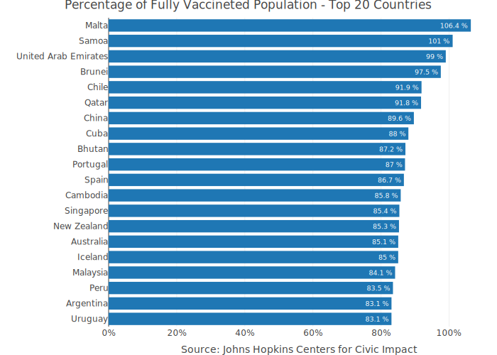

The coronavirus package provides a tidy format dataset of the 2019 Novel Coronavirus COVID-19 (2019-nCoV) epidemic and the vaccination efforts by country. The raw data is being pulled from the Johns Hopkins University Center for Systems Science and Engineering (JHU CCSE) Coronavirus repository.
More details available here, and a csv format of the package dataset available here

Important Notes
- As this an ongoing situation, frequent changes in the data format may occur, please visit the package changelog (e.g., News) and/or see pinned issues to get updates about those changes
- As of Auguest 4th JHU CCSE stopped track recovery cases, please see this issue for more details
- Negative values and/or anomalies may occurred in the data for the following reasons:
- The calculation of the daily cases from the raw data which is in cumulative format is done by taking the daily difference. In some cases, some retro updates not tie to the day that they actually occurred such as removing false positive cases
- Anomalies or error in the raw data
- Please see this issue for more details
Installation
Install the CRAN version:
install.packages("coronavirus")
Install the Github version (refreshed on a daily bases):
# install.packages("devtools") devtools::install_github("RamiKrispin/coronavirus")
Datasets
The package provides the following two datasets:
-
coronavirus - tidy (long) format of the JHU CCSE datasets. That includes the following columns:
-
date- The date of the observation, usingDateclass -
province- Name of province/state, for countries where data is provided split across multiple provinces/states -
country- Name of country/region -
lat- The latitude code -
long- The longitude code -
type- An indicator for the type of cases (confirmed, death, recovered) -
cases- Number of cases on given date -
uid- Country code -
province_state- Province or state if applicable -
iso2- Officially assigned country code identifiers with two-letter -
iso3- Officially assigned country code identifiers with three-letter -
code3- UN country code -
fips- Federal Information Processing Standards code that uniquely identifies counties within the USA -
combined_key- Country and province (if applicable) -
population- Country or province population -
continent_name- Continent name -
continent_code- Continent code
-
-
covid19_vaccine - a tidy (long) format of the the Johns Hopkins Centers for Civic Impact global vaccination dataset by country. This dataset includes the following columns:
-
country_region- Country or region name -
date- Data collection date in YYYY-MM-DD format -
doses_admin- Cumulative number of doses administered. When a vaccine requires multiple doses, each one is counted independently -
people_partially_vaccinated- Cumulative number of people who received at least one vaccine dose. When the person receives a prescribed second dose, it is not counted twice -
people_fully_vaccinated- Cumulative number of people who received all prescribed doses necessary to be considered fully vaccinated -
report_date_string- Data report date in YYYY-MM-DD format -
uid- Country code -
province_state- Province or state if applicable -
iso2- Officially assigned country code identifiers with two-letter -
iso3- Officially assigned country code identifiers with three-letter -
code3- UN country code -
fips- Federal Information Processing Standards code that uniquely identifies counties within the USA -
lat- Latitude -
long- Longitude -
combined_key- Country and province (if applicable) -
population- Country or province population -
continent_name- Continent name -
continent_code- Continent code
-
Data refresh
While the coronavirus CRAN version is updated every month or two, the Github (Dev) version is updated on a daily bases. The update_dataset function enables to overcome this gap and keep the installed version with the most recent data available on the Github version:
Note: must restart the R session to have the updates available
Alternatively, you can pull the data using the Covid19R project data standard format with the refresh_coronavirus_jhu function:
covid19_df <- refresh_coronavirus_jhu() head(covid19_df) #> date location location_type location_code location_code_type data_type value lat long #> 1 2020-04-08 Afghanistan country AF iso_3166_2 cases_new 56 33.93911 67.709953 #> 2 2020-04-03 Afghanistan country AF iso_3166_2 cases_new 34 33.93911 67.709953 #> 3 2021-09-25 Afghanistan country AF iso_3166_2 deaths_new 0 33.93911 67.709953 #> 4 2021-09-07 Afghanistan country AF iso_3166_2 deaths_new 3 33.93911 67.709953 #> 5 2021-09-08 Afghanistan country AF iso_3166_2 deaths_new 7 33.93911 67.709953 #> 6 2020-04-07 Afghanistan country AF iso_3166_2 cases_new 30 33.93911 67.709953
Usage
data("coronavirus") head(coronavirus) #> date province country lat long type cases uid iso2 iso3 code3 combined_key population continent_name continent_code #> 1 2020-01-22 Alberta Canada 53.9333 -116.5765 confirmed 0 12401 CA CAN 124 Alberta, Canada 4413146 North America NA #> 2 2020-01-23 Alberta Canada 53.9333 -116.5765 confirmed 0 12401 CA CAN 124 Alberta, Canada 4413146 North America NA #> 3 2020-01-24 Alberta Canada 53.9333 -116.5765 confirmed 0 12401 CA CAN 124 Alberta, Canada 4413146 North America NA #> 4 2020-01-25 Alberta Canada 53.9333 -116.5765 confirmed 0 12401 CA CAN 124 Alberta, Canada 4413146 North America NA #> 5 2020-01-26 Alberta Canada 53.9333 -116.5765 confirmed 0 12401 CA CAN 124 Alberta, Canada 4413146 North America NA #> 6 2020-01-27 Alberta Canada 53.9333 -116.5765 confirmed 0 12401 CA CAN 124 Alberta, Canada 4413146 North America NA
Summary of the total confrimed cases by country (top 20):
library(dplyr) summary_df <- coronavirus %>% filter(type == "confirmed") %>% group_by(country) %>% summarise(total_cases = sum(cases)) %>% arrange(-total_cases) summary_df %>% head(20) #> # A tibble: 20 × 2 #> country total_cases #> <chr> <int> <<<<<<< HEAD #> 1 US 41993789 #> 2 India 33417390 #> 3 Brazil 21080219 #> 4 United Kingdom 7406017 #> 5 Russia 7130245 #> 6 France 7029959 #> 7 Turkey 6794670 #> 8 Iran 5396013 #> 9 Argentina 5237159 #> 10 Colombia 4937596 #> 11 Spain 4929546 #> 12 Italy 4627699 #> 13 Indonesia 4185144 #> 14 Germany 4137062 #> 15 Mexico 3552983 #> 16 Poland 2896599 #> 17 South Africa 2877063 #> 18 Ukraine 2442344 #> 19 Philippines 2324475 #> 20 Peru 2164380
Summary of new cases during the past 24 hours by country and type (as of 2021-09-17):
======= #> 1 US 43683048 #> 2 India 33834702 #> 3 Brazil 21468121 #> 4 United Kingdom 7937810 #> 5 Russia 7474850 #> 6 Turkey 7238237 #> 7 France 7120214 #> 8 Iran 5624128 #> 9 Argentina 5259738 #> 10 Colombia 4962054 #> 11 Spain 4961128 #> 12 Italy 4682034 #> 13 Germany 4260494 #> 14 Indonesia 4219284 #> 15 Mexico 3678980 #> 16 Poland 2910866 #> 17 South Africa 2906422 #> 18 Philippines 2593399 #> 19 Ukraine 2566875 #> 20 Malaysia 2277565Summary of new cases during the past 24 hours by country and type (as of 2021-10-03):
>>>>>>> devlibrary(tidyr) coronavirus %>% filter(date == max(date)) %>% select(country, type, cases) %>% group_by(country, type) %>% summarise(total_cases = sum(cases)) %>% pivot_wider(names_from = type, values_from = total_cases) %>% arrange(-confirmed) #> # A tibble: 195 × 4 #> # Groups: country [195] <<<<<<< HEAD #> country confirmed death recovered #> <chr> <int> <int> <int> #> 1 US 207886 2635 NA #> 2 India 35662 281 NA #> 3 United Kingdom 32566 180 NA #> 4 Turkey 27692 237 NA #> 5 Philippines 20283 310 NA #> 6 Russia 19589 771 NA #> 7 Iran 17605 364 NA #> 8 Malaysia 17577 388 NA #> 9 Thailand 14555 171 NA #> 10 Vietnam 11521 212 NA #> 11 Brazil 11202 327 NA #> 12 Germany 9904 22 NA #> 13 Cuba 8291 75 NA #> 14 France 7756 107 NA #> 15 Serbia 7572 34 NA #> 16 Ukraine 6940 119 NA #> 17 Japan 6164 69 NA #> 18 Canada 5107 44 NA #> 19 Italy 4544 66 NA #> 20 Romania 4478 73 NA #> 21 Guatemala 4068 40 NA #> 22 Indonesia 3835 219 NA #> 23 Mexico 3754 190 NA #> 24 South Africa 3648 173 NA #> 25 Iraq 3559 56 NA #> 26 Spain 3222 44 NA #> 27 Kazakhstan 3117 0 NA #> 28 Israel 3040 29 NA #> 29 Costa Rica 2801 30 NA #> 30 Mongolia 2796 9 NA #> 31 Venezuela 2606 30 NA #> 32 Pakistan 2512 63 NA #> 33 Morocco 2412 53 NA #> 34 Austria 2364 12 NA #> 35 Belgium 2341 3 NA #> 36 Argentina 2308 185 NA #> 37 Netherlands 2236 11 NA #> 38 Greece 2231 40 NA #> 39 West Bank and Gaza 2219 19 NA #> 40 Burma 2187 75 NA ======= #> country confirmed death recovery #> <chr> <int> <int> <int> #> 1 United Kingdom 29719 43 0 #> 2 Turkey 27351 194 0 #> 3 US 25215 237 0 #> 4 Russia 25161 882 0 #> 5 India 20799 180 0 #> 6 Philippines 13226 112 0 #> 7 Iran 12428 229 0 #> 8 Thailand 10828 77 0 #> 9 Malaysia 9066 118 0 #> 10 Brazil 9004 225 0 #> 11 Romania 8682 150 0 #> 12 Ukraine 8575 134 0 #> 13 Vietnam 5376 114 0 #> 14 Serbia 5334 49 0 #> 15 Germany 4951 7 0 #> 16 Cuba 4097 46 0 #> 17 France 3799 17 0 #> 18 Italy 2967 33 0 #> 19 Venezuela 2964 27 0 #> 20 Iraq 2451 21 0 #> 21 Austria 2445 5 0 #> 22 Slovakia 2270 19 0 #> 23 Israel 2152 43 0 #> 24 Singapore 2057 6 0 #> 25 Australia 2023 12 0 #> 26 Belarus 1899 14 0 #> 27 Kazakhstan 1763 0 0 #> 28 Korea, South 1672 6 0 #> 29 Netherlands 1652 2 0 #> 30 Lithuania 1615 22 0 #> 31 Mongolia 1501 14 0 #> 32 Pakistan 1490 27 0 #> 33 Colombia 1413 29 0 #> 34 Canada 1396 6 0 #> 35 Ecuador 1381 29 0 #> 36 Burma 1194 48 0 #> 37 Georgia 1164 33 0 #> 38 Greece 1142 31 0 #> 39 Indonesia 1142 58 0 #> 40 Poland 1090 6 0 >>>>>>> dev #> # … with 155 more rows
Plotting daily confirmed and death cases in Brazil:
library(plotly) coronavirus %>% group_by(type, date) %>% summarise(total_cases = sum(cases)) %>% pivot_wider(names_from = type, values_from = total_cases) %>% arrange(date) %>% mutate(active = confirmed - death - recovered) %>% mutate(active_total = cumsum(active), recovered_total = cumsum(recovered), death_total = cumsum(death)) %>% plot_ly(x = ~ date, y = ~ active_total, name = 'Active', fillcolor = '#1f77b4', type = 'scatter', mode = 'none', stackgroup = 'one') %>% add_trace(y = ~ death_total, name = "Death", fillcolor = '#E41317') %>% add_trace(y = ~recovered_total, name = 'Recovered', fillcolor = 'forestgreen') %>% layout(title = "Distribution of Covid19 Cases Worldwide", legend = list(x = 0.1, y = 0.9), yaxis = list(title = "Number of Cases"), xaxis = list(title = "Source: Johns Hopkins University Center for Systems Science and Engineering"))

Plot the confirmed cases distribution by counrty with treemap plot:
conf_df <- coronavirus %>% filter(type == "confirmed") %>% group_by(country) %>% summarise(total_cases = sum(cases)) %>% arrange(-total_cases) %>% mutate(parents = "Confirmed") %>% ungroup() plot_ly(data = conf_df, type= "treemap", values = ~total_cases, labels= ~ country, parents= ~parents, domain = list(column=0), name = "Confirmed", textinfo="label+value+percent parent")

data(covid19_vaccine) head(covid19_vaccine) #> country_region date doses_admin people_partially_vaccinated people_fully_vaccinated report_date_string uid province_state iso2 iso3 code3 fips lat long combined_key population #> 1 Afghanistan 2021-02-22 0 0 0 2021-02-22 4 <NA> AF AFG 4 <NA> 33.93911 67.709953 Afghanistan 38928341 #> 2 Afghanistan 2021-02-23 0 0 0 2021-02-23 4 <NA> AF AFG 4 <NA> 33.93911 67.709953 Afghanistan 38928341 #> 3 Afghanistan 2021-02-24 0 0 0 2021-02-24 4 <NA> AF AFG 4 <NA> 33.93911 67.709953 Afghanistan 38928341 #> 4 Afghanistan 2021-02-25 0 0 0 2021-02-25 4 <NA> AF AFG 4 <NA> 33.93911 67.709953 Afghanistan 38928341 #> 5 Afghanistan 2021-02-26 0 0 0 2021-02-26 4 <NA> AF AFG 4 <NA> 33.93911 67.709953 Afghanistan 38928341 #> 6 Afghanistan 2021-02-27 0 0 0 2021-02-27 4 <NA> AF AFG 4 <NA> 33.93911 67.709953 Afghanistan 38928341 #> continent_name continent_code #> 1 Asia AS #> 2 Asia AS #> 3 Asia AS #> 4 Asia AS #> 5 Asia AS #> 6 Asia AS
Plot the top 20 vaccinated countries:
covid19_vaccine %>% filter(date == max(date), !is.na(population)) %>% mutate(fully_vaccinated_ratio = people_fully_vaccinated / population) %>% arrange(- fully_vaccinated_ratio) %>% slice_head(n = 20) %>% arrange(fully_vaccinated_ratio) %>% mutate(country = factor(country_region, levels = country_region)) %>% plot_ly(y = ~ country, x = ~ round(100 * fully_vaccinated_ratio, 2), text = ~ paste(round(100 * fully_vaccinated_ratio, 1), "%"), textposition = 'auto', orientation = "h", type = "bar") %>% layout(title = "Percentage of Fully Vaccineted Population - Top 20 Countries", yaxis = list(title = ""), xaxis = list(title = "Source: Johns Hopkins Centers for Civic Impact", ticksuffix = "%"))

Dashboard
Note: Currently, the dashboard is under maintenance due to recent changes in the data structure. Please see this issue
A supporting dashboard is available here
Data Sources
The raw data pulled and arranged by the Johns Hopkins University Center for Systems Science and Engineering (JHU CCSE) from the following resources:
- World Health Organization (WHO): https://www.who.int/
- DXY.cn. Pneumonia. 2020. https://ncov.dxy.cn/ncovh5/view/pneumonia.
- BNO News: https://bnonews.com/index.php/2020/04/the-latest-coronavirus-cases/
- National Health Commission of the People’s Republic of China (NHC):
http:://www.nhc.gov.cn/xcs/yqtb/list\_gzbd.shtml
- China CDC (CCDC): http:://weekly.chinacdc.cn/news/TrackingtheEpidemic.htm
- Hong Kong Department of Health: https://www.chp.gov.hk/en/features/102465.html
- Macau Government: https://www.ssm.gov.mo/portal/
- Taiwan CDC: https://sites.google.com/cdc.gov.tw/2019ncov/taiwan?authuser=0
- US CDC: https://www.cdc.gov/coronavirus/2019-ncov/index.html
- Government of Canada: https://www.canada.ca/en/public-health/services/diseases/2019-novel-coronavirus-infection/symptoms.html
- Australia Government Department of Health:https://www.health.gov.au/news/health-alerts/novel-coronavirus-2019-ncov-health-alert
- European Centre for Disease Prevention and Control (ECDC): https://www.ecdc.europa.eu/en/geographical-distribution-2019-ncov-cases
- Ministry of Health Singapore (MOH): https://www.moh.gov.sg/covid-19
- Italy Ministry of Health: https://www.salute.gov.it/nuovocoronavirus
- 1Point3Arces: https://coronavirus.1point3acres.com/en
- WorldoMeters: https://www.worldometers.info/coronavirus/
- COVID Tracking Project: https://covidtracking.com/data. (US Testing and Hospitalization Data. We use the maximum reported value from “Currently” and “Cumulative” Hospitalized for our hospitalization number reported for each state.)
- French Government: https://dashboard.covid19.data.gouv.fr/
- COVID Live (Australia): https://covidlive.com.au/
- Washington State Department of Health:https://www.doh.wa.gov/Emergencies/COVID19
- Maryland Department of Health: https://coronavirus.maryland.gov/
- New York State Department of Health: https://health.data.ny.gov/Health/New-York-State-Statewide-COVID-19-Testing/xdss-u53e/data
- NYC Department of Health and Mental Hygiene: https://www1.nyc.gov/site/doh/covid/covid-19-data.page and https://github.com/nychealth/coronavirus-data
- Florida Department of Health Dashboard: https://services1.arcgis.com/CY1LXxl9zlJeBuRZ/arcgis/rest/services/Florida_COVID19_Cases/FeatureServer/0 and https://fdoh.maps.arcgis.com/apps/opsdashboard/index.html#/8d0de33f260d444c852a615dc7837c86
- Palestine (West Bank and Gaza): https://corona.ps/details
- Israel: https://govextra.gov.il/ministry-of-health/corona/corona-virus/
- Colorado: https://covid19.colorado.gov/data)